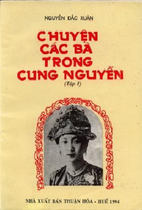

Rời miền Bắc, Nguyễn Hoàng giong buồm tiến thẳng vào Nam. Cập bến cảng Yên Việt (Cửa Việt), bản bộ tướng quân lên bờ dựng doanh trại trên cồn cát thuộc xã Ai Tử huyện Vũ Xương (Triệu Phong). Quân trinh sát của Nguyễn đi khắp vùng Thuận Hóa nghiên cứu địa hình, địa vật…
Kết quả nghiên cứu được trình lên, Nguyễn Hoàng rất thích thú với địa thế xã Phú Xuân thuộc huyện Hương Trà “núi sông vàng tụ, cảnh đẹp dân giàu”. Được địa lợi, Đoan Quốc Công liền bàn đến việc “thi hành đức chính để vỗ về dân chúng” nhằm xây dựng cơ nghiệp lâu dài.
Lúc đó, tướng nhà Mạc là Quận Lập đang đóng dinh cơ tại Khang Lộc (Lệ Ninh) nghe tin Đoan Quốc Công thừa lệnh Trịnh Kiểm vào trấn đất Thuận Hóa lấy làm tức giận.
Để trừ hậu họa, Quận Lập tức tốc tổ chức hai cánh quân vào đánh Đoan Quốc Công. Cánh thứ nhất gồm 30 chiếc thuyền đến ngay Cửa Việt thị uy; cánh thứ hai gồm một ngàn bộ binh đi qua đường Hồ Xá – Lãng Uyển (?) đến đóng ở miếu Thang Tương (?) dự định sẽ đánh úp cướp doanh trại của chúa Tiên (tức Nguyễn Hoàng Đoan Quốc Công).
Trước thế lực của Quận Lập (nhà Mạc), chúa Tiên rất lo lắng: Vì quân Nguyễn vỏn vẹn chỉ có mười chiếc thuyền, bộ binh không có làm sao có thể đương đầu với quân nhà Mạc?
Một đêm, bên ngọn đuốc, chúa Tiên đang thao thức, tư lự… bỗng nghe bên bờ sông tiếng sóng nước kêu “trảo trảo” Chúa lấy làm lạ! Sáng hôm sau, thấy một vùng nước xô sóng cuộn khác thường. Chúa ngước mắt nhìn trời khấn thầm:
Trên sông nếu có thần linh xin phù hộ cho, đánh tan quân giặc, sẽ lập miếu phụng thờ bốn mùa tế lễ!
Đêm hôm ấy Chúa nằm mơ thấy một người đàn bà mặc áo xanh, tay cầm chiếc quạt thẻ đến thưa rằng:
Tướng quân muốn diệt trừ ngụy đảng cần lập kế dụ chúng đến bãi cát ven sông, thiếp sẽ giúp sức trừ được, khỏi phải phiền nhiễu đến dân trong miền.
Nói xong người trong mộng buông tay áo ra đi… Chúa tỉnh dậy, trong lòng thầm vui. Chúa nghĩ: “Chiêm bao thấy người đàn bà bảo ta phải lập kế dụ địch, như vậy ắt phải dùng kế mỹ nhân”.
Lúc bấy giờ Chúa mới có một nàng hầu đẹp, quê ở xã Thế Lại (Huế) tên là Ngô Thị Lâm. Tuy là phận gái nhưng bà gan dạ, có mưu trí, ứng đối trôi chảy, nhan sắc thì “Nguyệt mờ hoa thẹn, dáng điệu cá lặn chim sa” so với nàng Tây Thi ở Hàm Đan (Trung Quốc) chẳng kém bao nhiêu! Chúa cả mừng, gọi nàng Lâm đến giao nhiệm vụ: đem vàng bạc, kỳ nam đến trại quân nhà Mac, tiến dâng các vật báu, xin mở đường hòa hiếu. Nếu cần nàng phải ưng chịu cho Quận Lập tư thông, mục đích là làm sao dụ được Lập đến đất Trảo Trảo để có kế diệt trừ. Thật là chuyện lạ đời, ngoài sức tưởng tượng của một người con gái, nàng Lâm sụp lạy kêu khóc:
Tiện thiếp từ khi được theo hầu Chúa thượng, dốc lòng theo nữ đạo, giữ gìn tiết giá phu nhân. Nếu Chúa muốn thiếp nhảy vào chỗ nước sôi lửa bỏng muốn chết thiếp không dám chối từ. Nhưng nếu bảo thiếp để cho Quận Lập tư thông thì thiếp không thể nào hiểu được. Thần thiếp xin nhận tội chết chứ không thể nào làm theo lời Chúa thượng.
Chúa vừa đau xót vừa kính phục người tiết phụ tìm lời an ủi và thuyết phục nàng.
Lời của nàng thật đúng với phẩm hạnh lớn của đàn bà. Ta hiểu rõ lòng nàng. Nhưng nay vì sự nghiệp “quốc gia đại sự” nếu nàng không xả thân thì không có ai ở đây có thể phá được giặc. Nàng hãy cứ nghe lời ta, đừng chối từ.
Nàng Lâm đành lau nước mắt và làm theo lệnh Chúa.
Mang lễ vật đến doanh trại Quận Lập, nàng Lâm cung kính thưa:
Thân vâng mệnh quan Quận Đoan, nghe tin minh công oai trời sắp đến, lo sợ khôn xiết, đặc cách sai tiện thiếp đem ít đồ vật xưa đến lễ mừng để bày tỏ thành tâm. Xin minh công cho lập lễ thề: Minh công làm huynh trưởng, bản quan của thiếp làm nghĩa đệ, cùng đồng lòng chung sức may mới tránh khỏi hiềm thù đánh giết lẫn nhau gây đau thương cho trăm họ.
Quận Lập liếc mắt ranh mãnh, cất giọng cả mắng:
Ngươi muốn làm sứ giả đàn bà đến thuyết khách để câu ta đó chăng?
Thị Lâm giả vờ run sợ, sụp đầu van lạy nhưng vẫn liếc mắt chuyển làn thu ba đưa tình… Quận Lập vốn là một tên tham của, mê gái, thấy nàng Lâm xinh đẹp, quyến rũ, ăn nói ngọt ngào, lửa dục trong y bốc lên. Quận Lập liền đổi thái độ, sai người ra nhận lễ vật rồi đứng dậy bước đến cầm tay nàng Lâm dắt vào phòng riêng… Nàng Lâm đã dùng kế “cành dương ngả theo bóng dương” khiến cho Quận Lập đắm say mê muội… Nàng Lâm nhắc lại việc lập đàn thề. Quận Lập chiều ý, liền nghe theo.
Với sự cảnh giác, Quận Lập cho trinh sát đi thám thính biết Quận Đoan quân ít, không có gì đáng phải sợ, bèn cùng với nàng Lâm định ngày làm lễ thề kết nghĩa.
Được tin Quận Lập đã bằng lòng, Đoan quận công mừng rữ khôn xiết, sai người bí mật đến vùng Trảo Trảo dựng một gian miếu tranh, đào hố ngầm bốn phía, chọn một số dũng sĩ cầm khí giới ẩn mình trong hố dùng cỏ lác và cát lấp bên trên như đất liền. Để một ít người già yếu cầm chổi, xách sọt đứng ở cửa miếu… đợi lệnh.
Hạ tuần tháng mười năm ấy, nàng Lâm đưa Quận Lập đến miếu tranh làm lễ thề… Thấy quân binh Quận Đoan không bao nhiêu lại có vẻ già yếu, Quận Lập chủ quan không đề phòng.
Bắt chước Quan Vân Trường ngày xưa, Quận Lập dùng một chiếc đò nhỏ cùng với 30 lính thân hành đến chỗ hội thề.
Khi thuyền Quận Lập ghé vào cồn cát Trảo Trảo, ngay trước cửa miếu, Quận Lập cầm bảo đao bước lên bộ đi thẳng vào miếu. Nàng Lâm theo sau, thảnh thót gọi:
Xin minh công bước chậm lại kẻo bản quan của thiếp lo sợ…
Quận Lập cất tiếng cười vang và đi chậm rãi. Từ xa Đoan Quốc Công áo mão chỉnh tề chắp tay kính cẩn đón chờ… Thình lình Đoan Quốc Công quát lớn:
Quân bay mau dậy đón tiếp tôn huynh!
Quân mai phục dọc theo các hố cát vùng dậy xông vào vây bắt. Quận Lập cả kinh, hồn xiêu phách lạc co giò tháo chạy… Ra đến bờ sông thì thuyền vừa rời bến, Quận Lập dốc hết sức bình sinh nhảy ào lên mạn thuyền, nhưng… vị tướng hiếu sắc rơi tõm xuống nước. Ngay lúc ấy bộ tướng của Đoan Quốc Công là Thự Trung và Thự thiết ào tới, thấy Quận Lập đang lóp ngóp dưới sông bèn dương cung bắn chết. Quan hầu của Quận Lập hoảng loạn mạnh ai nấy chạy tìm đường thoát thân.
Thắng trận, về bản doanh, Đoan quận công mở tiệc khao thưởng tướng sĩ, sai người tôn tạo miếu Trảo Trảo và sắc phong cho vị thần linh ấy là “Linh thu phố trạch tướng hựu phu nhân” bốn mùa cúng tế.
Riêng nàng Lâm, Chúa gọi đến bảo rằng:
Trừ được Quận Lập và phe đảng là nhờ công lao to lớn của nàng. Ta muốn chọn người tài trí gả chồng cho nàng để tại thành địa vị công khanh thoát kiếp cô đơn của kẻ nô tỳ và cũng là để làm hiển trạng công lớn.
Nàng Lâm khóc lóc, than rằng:
Ý nguyện bình sinh của thần thiếp là được cầm khăn lược theo hầu Chúa thượng giữa trọn tiết trinh. Chỉ vì việc nước mà xác thân ô uế, khó mà rửa được. Vậy từ nay thần thiếp xin giữ việc bếp núc, quét tước đền ơn thánh chúa vẹn đạo làm tôi. Còn việc Chúa thượng muốn cải giá cho thần, thì đến cùng, thần sẽ chẳng dám phụng mệnh. Xin Chúa thượng lượng thứ cho.
Chúa cười đáp:
Đây là việc nước, không phải lỗi hay tội tình riêng của nàng. Đền công đáp nghĩa là do ý muốn tự bản thân ta và nàng nên nghe theo để làm sáng tỏ thân danh với đời sau.
Chúa ân cần khuyên giải, vỗ về nhiều bận, nàng mới vâng chịu. Bấy giờ có Ngô Côn, người gốc Nghệ An, làm phó Doãn sự ở vệ Thiện Vũ đang theo giúp việc tại phủ chúa. Ngô Côn tướng mạo khôi ngô, văn võ kiêm toàn, thông kim bác cổ… rất được Chúa yêu mến nên được Chúa chọn cho kết duyên với nàng Lâm xinh đẹp. Tân nhân và Tân lang bái vọng tạ ơn rồi làm lễ giao bôi và động phòng hoa chúc…
(Theo Nam Triều Công nghiệp diễn chí)